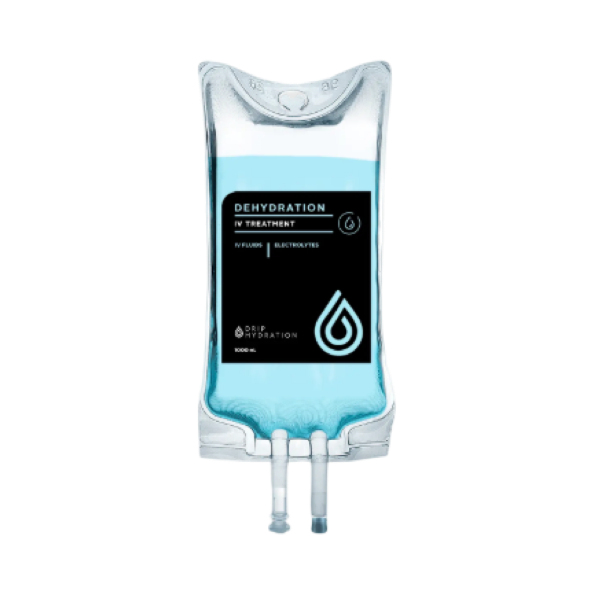

„Der Morgen danach ist hart."
Ein Kater kann den Tag ruinieren. Die Recovery-Infusion lindert die typischen Symptome — rehydriert dich und ersetzt, was durch Alkohol verloren ging.
Hangover · RehydrationErhole dich nach intensivem Training, Krankheit oder einer durchzechten Nacht deutlich schneller. In nur 30–60 Minuten wird dein Körper gezielt rehydriert und mit den Vitaminen versorgt, die verloren gegangen sind — bei dir zuhause, ärztlich begleitet.
Mehrfachauswahl möglich — deine Auswahl übernehmen wir direkt in deine Anfrage.
Diplomierte Pflegefachfrauen · Ärztlich begleitet · Nur nach ärztlicher Abklärung

Unsere spezielle Rezeptur rehydriert dich, ersetzt verlorene Vitamine und enthält zusätzlich Medikamente gegen Übelkeit und Entzündungen.
Die genaue Zusammensetzung und Dosierung stimmen wir vor der ersten Infusion gemeinsam mit unserem Arzt auf dich ab.
CHF 289.–
komplette Recovery-Rezeptur — inklusive ärztliche Beratung, Anfahrt und Material
Für alle, die sich nach intensivem Training, einer Krankheit oder einer langen Nacht schnell wieder fit fühlen wollen — rehydriert, mit Vitaminen versorgt und von Übelkeit befreit. Anfahrt, Material und Betreuung sind im Preis enthalten.
Formular unten ausfüllen — dauert keine Minute. Wir melden uns meist noch am selben Tag.
Wir klären mit dir ab, welche Präparate zu deinem Ziel passen — sicher und individuell.
Zum Wunschtermin bei dir zuhause oder im Büro. Wir bringen alles mit und bleiben bei dir.
Eine Infusion gehört in medizinische Hände. Bei uns wird sie von diplomierten Pflegefachfrauen mit Spital-Erfahrung gelegt — ärztlich begleitet durch Dr. Frédéric Porchet.
Auswahl und Dosierung nach ärztlicher Abklärung — höchste Qualitäts- und Sicherheitsstandards.
Infusionen sind unser Alltag als spezialisierte Spitex — keine angelernte Aushilfe.
Keine Anfahrt, kein Wartezimmer — wir bringen alles mit und bleiben während der Behandlung bei dir.
Die Infusion dauert nur 30–60 Minuten. Dein Körper wird dabei gezielt rehydriert und direkt über die Vene mit Vitaminen versorgt — viele spüren die Wirkung deutlich schneller als mit Tabletten oder Hausmitteln.
Ja. Verabreicht wird ausschliesslich von diplomierten Pflegefachfrauen, ärztlich begleitet. Wir bringen alles mit und bleiben während der ganzen Behandlung bei dir.
Wellness- und Vitamin-Infusionen sind in der Regel Selbstzahler-Leistungen. Der angegebene Preis ist der Endpreis — inklusive Anfahrt, Material und Betreuung.
Im ganzen Zürcher Unterland und in Winterthur — bei Bedarf im ganzen Kanton Zürich.
Ein paar kurze Angaben, dann meldet sich unser Team für deine kostenlose Erstberatung — meist noch am selben Tag.